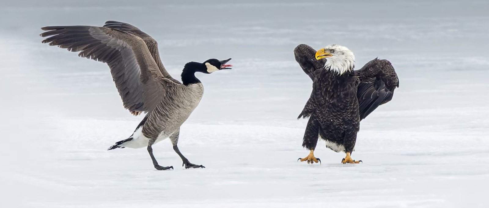

Top Stories头条20
- 1International court's ruling on Myanmar genocide means little for victims, but much for future cases国际法院对缅甸种族灭绝的裁决对受害者来说意义不大，但对未来的案件意义重大
- 2They finally had their dream food truck. Then it was repossessed他们终于拥有了梦想中的餐车。然后就被收回了
- 3Russian attacks on Kyiv kill 3, cripple bridges and cut power俄罗斯对基辅的袭击造成 3 人死亡、桥梁瘫痪并断电
- 4Large AI companies 'desperate for compute' are crowding out Canadian startups at home大型人工智能公司“迫切需要计算”，正在排挤加拿大本土初创公司
- 5Canadian investment dollars are one of the villains in Spain's election fight over housing加拿大投资资金是西班牙住房选举之争的罪魁祸首之一
- 6Canada looks to break Starlink's grip on Arctic military communications加拿大希望打破星链对北极军事通信的控制
- 7Health-care report highlights chronic conditions, inequities in northern Ontario First Nations医疗保健报告强调安大略省北部原住民的慢性病和不平等现象
- 8Trump administration moves to drop lawsuit challenging Alaska Senate election result特朗普政府采取行动撤销质疑阿拉斯加州参议院选举结果的诉讼
- 9Texas death row execution takes more than an hour as inmate heard complaining of pain得克萨斯州死囚区执行死刑花了一个多小时，因为囚犯听到了痛苦的抱怨
- 10Sean Cairncross out, Kirsten A. Davies in as White House national cyber director: source肖恩·凯恩克罗斯 (Sean Cairncross) 出任白宫国家网络总监，克尔斯滕·戴维斯 (Kirsten A. Davies) 出任：消息来源
- 11'Crypto King' faked kidnapping, created video for sympathy, defence says辩方称，“加密货币之王”伪造绑架，制作视频以博取同情
- 12U.S. sanctions Italian mafia's alleged Canadian branch, including Toronto-area funeral homes美国制裁意大利黑手党在加拿大的分支机构，其中包括多伦多地区的殡仪馆
- 13Former top Mountie, guilty of rec centre teen assault, gets conditional discharge前顶级骑警因袭击娱乐中心青少年罪被有条件释放
- 14Fiona the hippo dies after ingesting visitor's hat河马菲奥娜吞下游客帽子后死亡
- 15Petition asks Netflix to cancel The Body for 'blasphemous' and 'anti-Christian' content请愿书要求Netflix下架“亵渎神明”和“反基督教”内容的《The Body》
- 16A Montrealer died in Istanbul. Authorities blame food poisoning but what we found suggests something else一名蒙特利尔人在伊斯坦布尔去世。当局归咎于食物中毒，但我们的发现表明了其他原因
- 17Ever buy more than you mean to when shopping online? This could be why网上购物时，您是否曾经购买过超出您预期的商品？这可能就是为什么
- 18Reaching interim U.S. trade agreement would kickstart new CUSMA talks, minister says部长表示，达成美国临时贸易协议将启动新的 CUSMA 谈判
- 19With Putin in the room, Carney condemns Russia's illegal invasion of Ukraine普京在场，卡尼谴责俄罗斯非法入侵乌克兰
- 20Why some Americans are stockpiling for a 90-day power outage为什么一些美国人正在为 90 天的停电储备物资
Canada加拿大20
- 21Orders roll in for Quebec company's quirky shipping boxes made from campaign posters魁北克公司用竞选海报制成的奇特运输箱订单滚滚而来
- 22How a small Toronto radio program is bringing Afghan women's voices to light多伦多的一个小型广播节目如何让阿富汗妇女的声音为世人所知
- 23CN derailments into Skeena River raise fresh concerns over shipping hazardous materials through northwest B.C.CN 脱轨进入斯基纳河引发了人们对通过不列颠哥伦比亚省西北部运输危险材料的新担忧。
- 24Tumbler Ridge shooter used ChatGPT to build 3D gun parts, U.S. magazine reports据美国杂志报道，《Tumbler Ridge》射击游戏使用 ChatGPT 来构建 3D 枪支零件
- 25Almost half of women in B.C. report intimate partner violence: StatsCanBC省几乎一半的女性报告亲密伴侣暴力：StatsCan
- 26Alleged co-conspirator in Tumbler Ridge shooting has trial delayed until December 2027坦布勒岭枪击案涉嫌共谋者的审判被推迟至2027年12月
- 27Leaked news release announces Konrad Narth will lead Manitoba PCs into election — before members vote泄露的新闻稿宣布康拉德·纳斯将在成员投票之前领导曼尼托巴省保守党参加选举
- 28Ontario's former colleges and universities minister refuses to answer questions about growing OSAP scandal安大略省前学院和大学部长拒绝回答有关日益严重的 OSAP 丑闻的问题
- 29Granby Zoo offers to rehome bat colony living in Quebec long-term care facility格兰比动物园提议为居住在魁北克长期护理机构的蝙蝠群提供新家园
- 30Alberta government to revise policy as school boards say new flag regulations could cost millions of dollars艾伯塔省政府将修订政策，因为教育局表示新的旗帜规定可能耗资数百万美元
- 31'We could have been dead,' says tenant who escaped Cape Breton building collapse“我们本可能已经丧生。”一位从布雷顿角坍塌大楼中逃生的租户说道。
- 326 Canadian cities announced as stops on PWHL Takeover Tour6座加拿大城市被宣布为PWHL接管巡回赛的停靠站
- 33Alberta bill would ban some bike lanes, let transportation minister remove others艾伯塔省的法案将禁止修建一些自行车道，并允许交通部长拆除其他自行车道
- 34Ontario Northlander rail service to resume on Dec. 10安大略省Northlander铁路服务将于12月10日恢复
- 35Mother in Burlington, Ont., house fire over the weekend has died, family friend says一位家庭朋友表示，安大略省伯灵顿市一位母亲在周末的房屋火灾中丧生。
- 36Montreal byelections crucial for rebuilding NDP, party leader Avi Lewis says新民主党领袖Avi Lewis表示，蒙特利尔补选对重建新民主党至关重要
- 37Water levels ‘critically low’ at Moose Factory Island water treatment plant in northern Ontario安大略省北部穆斯工厂岛水处理厂的水位“极低”
- 38KPMG Canada client documents accessed in cybersecurity breach, accounting firm says会计师事务所称，毕马威加拿大客户文件在网络安全漏洞中被访问
- 39Should playing O Canada be mandatory in all P.E.I. schools? One MLA thinks so所有爱德华王子岛省的学校是否都应强制播放《O Canada》？一位省议员认为应该
- 40Collision in west end sends 1 to hospital, knocks out power to thousands西区发生撞车事故，导致 1 人被送往医院，数千人断电
Toronto多伦多20
- 41Vote for next leader of Ontario Liberals to conclude on Friday安大略省自由党下一任领导人投票将于周五结束
- 42Ontario man on list of Canada's 25 most wanted fugitives arrested in Winnipeg: OPP加拿大25名头号通缉犯名单上的安大略省男子在温尼伯被捕：OPP
- 43Peel Region's new council chair on the 'tumultuous new world' of strong regional chairs皮尔地区新任理事会主席谈强有力的地区主席的“动荡的新世界”
- 44Man dead after being struck by vehicle in Mississauga, police say警方称，密西沙加男子被车撞身亡
- 45Vehicle ticketed in Toronto minutes after rush hour sign change — and driver is not happy多伦多高峰时段标志改变后几分钟就被开罚单，司机不高兴
- 46Forensic pathologist tells inquest he was 'shocked' Jamal Francique survived as long as he did after gunshot法医病理学家在验尸调查中表示，他对Jamal Francique中枪后竟能存活这么久感到“震惊”
- 47Toronto's unusually sunny, warm November weather to be hit by cold stretch next week: Environment Canada加拿大环境部：多伦多异常晴朗温暖的11月天气下周将迎来一段寒冷天气
- 48Toys 'R' Us partnership has Staples Canada playing around with its business model与玩具反斗城的合作让Staples Canada尝试其商业模式
- 49This Etobicoke mall was transformed into the set of Netflix's latest game show这座位于怡陶碧谷的购物中心被改造成Netflix最新游戏节目的拍摄场地
- 50Chow turns down police board seat, selects new committee heads at city hallChow拒绝警察委员会席位，在市政厅选出新的委员会主席
- 51Toronto drug checking service reports discovery of new designer drug in fentanyl supply多伦多毒品检测服务报告称在芬太尼供应中发现了新型合成毒品
- 52Peel police charge off-duty Sudbury police sergeant and 1 other following altercation in Mississauga皮尔警方在密西沙加发生口角后指控休班的萨德伯里警官和其他一名警官
- 53Toronto Maple Leafs fans lose playoff hopes as team fights 7-game losing streak多伦多枫叶队遭遇七连败，球迷失去季后赛希望
- 54NSL champions AFC Toronto celebrated at city hallNSL冠军AFC多伦多队在市政厅庆祝夺冠
- 55Longtime Hamilton politicians say goodbye to council, reflect on their careers and share advice for new term汉密尔顿的长期政客告别议会，反思自己的职业生涯并分享新任期的建议
- 56Events in Hamilton and Niagara mark Transgender Day of Remembrance汉密尔顿和尼亚加拉举行的活动纪念跨性别者纪念日
- 57There's a byelection coming for Brantford—Brant South, here who's running布兰特福德—布兰特南选区即将举行补选，以下是参选人名单
- 58First-time Hamilton councillors get taste of city hall ahead of busy first term汉密尔顿新任市议员在繁忙的第一任期开始前先体验一下市政厅的工作
- 59Man arrested, police say, after threatening to run over people in Toronto 'over their perceived race'警方称，一名男子因威胁在多伦多“因其种族身份”碾压行人而被捕。
- 60Juliet Daniel changed cancer research. Students of the late Canadian scientist say she also changed lives朱丽叶·丹尼尔改变了癌症研究。这位已故加拿大科学家的学生表示，她还改变了人们的生活
Burlington & Oakville伯灵顿·奥克维尔15
- 61Oakville's Sophia Ran organized a benefit concert which raised more than $6K for Halton Learning Foundation奥克维尔的 Sophia Ran 组织了一场慈善音乐会，为 Halton 学习基金会筹集了超过 6,000 美元
- 62Settlement reached on 16-storey Burlington Plains Road tower — but developer has ‘no current plans to move forward’伯灵顿平原路 16 层大楼已达成和解，但开发商“目前没有推进计划”
- 63Halton highway closures for planned roadwork on Nov. 20Halton 高速公路因计划于 11 月 20 日进行道路施工而封闭
- 64'I'm just existing': Mother mourns daughter, son-in-law and 2 grandchildren killed by Burlington fire“我只是存在”：母亲哀悼在伯灵顿火灾中丧生的女儿、女婿和两个孙子
- 65Fourth person pulled from burning Burlington home has died从伯灵顿着火的家中救出的第四人死亡
- 66Burlington townhouse fire claims a fourth family member as one child remains in critical condition伯灵顿联排别墅火灾导致第四名家庭成员死亡，其中一名儿童情况危急
- 67Suspect wanted after early morning Oakville bank robbery奥克维尔凌晨银行抢劫案嫌疑人被通缉
- 68Halton police seek man following armed bank robbery in Oakville荷顿警方在奥克维尔武装银行抢劫案中寻找男子
- 69New Oakville council unanimously demands province scrap 11-tower plan新奥克维尔市议会一致要求省废除 11 座塔楼计划
- 70What's on this weekend in Burlington伯灵顿 这个周末有什么活动
- 71Burlington's Jack Lehto races to national university cross-country silver伯灵顿的杰克·莱托 (Jack Lehto) 获得国立大学越野赛银牌
- 72North Oakville families gain new hub for free EarlyON programs北奥克维尔的家庭将迎来一个全新的免费EarlyON项目中心
- 73No injuries reported in armed bank robbery in Oakville: police奥克维尔武装银行抢劫案无人受伤：警方
- 74SIU charges Halton police officer after shooting of Burlington, Ont., man in motel parking lot安大略省特别调查组（SIU）在伯灵顿市一家汽车旅馆停车场发生枪击事件后对哈尔顿警官提起指控
- 75Carole Baxter elected Halton school board chair卡罗尔·巴克斯特当选荷顿学校董事会主席
World国际19
- 769-month-old dies of hypothermia in Gaza as territory heads into winter season随着加沙地区进入冬季，一名 9 个月大的婴儿因体温过低而死亡
- 77Judge declares Meghan Markle's father fit to face charges related to child sexual abuse images法官宣布梅根·马克尔的父亲适合面临与儿童性虐待图片相关的指控
- 78Armed forces in Haiti push to oust gang members from corridor on edge of capital海地武装部队将帮派成员赶出首都边缘的走廊
- 79Law firm has done $11.8M US worth of free legal work for Trump administration, Democrats say民主党人称律师事务所已为特朗普政府提供了价值 1180 万美元的免费法律服务
- 80Dozens missing off Senegal as West African departures for Europe surge随着西非前往欧洲的移民人数激增，塞内加尔有数十人失踪
- 81Fossil fuel limits cut from latest draft of UN climate deal联合国气候协议最新草案删除了化石燃料限制
- 82South Korea's top court overturns charges against ex-prime minister for his role in martial law韩国最高法院撤销对前总理在戒严期间所扮演角色的指控
- 83Crimea bridge attacked again, Russian governor says俄罗斯州长称克里米亚大桥再次遭到袭击
- 84Anthropic prices IPO at $83 US per share, valuing AI giant at $1.51 trillion USAnthropic的IPO价格为每股83美元，这家人工智能巨头的估值为1.51万亿美元
- 85Florida pastor convicted of U.S. charges in 2021 killing of Haitian president佛罗里达州牧师因 2021 年杀害海地总统而被美国定罪
- 86She says Russell Brand sexually assaulted her when she was 16. She's waiving her anonymity to speak out她说拉塞尔·布兰德 (Russell Brand) 在她 16 岁时对她进行了性侵犯。她放弃匿名以说出真相
- 87Trump's team scrambles to calm U.S. fears over tech outages特朗普团队努力平息美国对科技中断的担忧
- 88Flights, banks, emails: What we know about a U.S. wave of tech outages航班、银行、电子邮件：我们对美国一波技术中断事件的了解
- 89Hakeem Jeffries poised to become 1st Black U.S. House Speaker, after internal vote by Democrats在民主党内部投票后，哈基姆·杰弗里斯有望成为美国众议院首位黑人议长
- 90Xi, Putin and Trump expected to meet for about an hour, Kremlin says克里姆林宫表示，习近平、普京和特朗普预计将举行约一个小时的会晤。
- 91What the U.S. might learn from Canada's privatized air traffic control美国可以从加拿大私有化的空中交通管制中学到什么
- 92Big tech getting glimpse at espionage threats, which extend beyond sector大型科技公司看到了超出行业范围的间谍威胁
- 93Myanmar committed genocide against Rohingya ethnic minority, International Court of Justice rules国际法院裁定缅甸对罗兴亚族裔少数群体实施种族灭绝
- 94Who will win the battle over Trump’s ‘Trash Island’? | About That谁将赢得特朗普“垃圾岛”之战？ |关于那个
Politics政治17
- 95MPs clash over Sunday sitting as marathon study of Carney's major projects bill continues对卡尼重大项目法案的马拉松式研究仍在继续，议员们在周日的会议上发生冲突
- 96More cadets, more money, less training: Military defends controversial suspension更多学员，更多钱，更少训练：军方为有争议的停职辩护
- 97New Green Party leader pitches NDP on 'electoral co-operation' between 2 parties新任绿党领袖向新民主党提议两党“选举合作”
- 98Liberals won't pull advance requests out of MAID legislation for separate vote: minister部长：自由党不会将预先申请从MAID立法中抽离出来进行单独表决
- 99Canadian Air Force major charged with negligent performance, abuse of subordinates加拿大空军少校被控玩忽职守、虐待下属
- 100Cadets being told to stand down as Canada adds billions to defence加拿大增加数十亿美元国防资金，学员被告知辞职
- 101Nearly 300,000 people sign petition demanding U.S. Ambassador Pete Hoekstra's removal近30万人签署请愿书，要求撤换美国大使彼特·胡克斯特拉
- 102'If the U.S. doesn't want to do a deal, we're busy,' Carney says of ongoing trade talks卡尼谈及正在进行的贸易谈判：“如果美国不想达成协议，我们很忙。”
- 103Carney meets with Trump at APEC, says Canada's trade with China isn't U.S. president's top concern卡尼在亚太经合组织会议上与特朗普会晤，表示加拿大与中国的贸易不是美国总统的首要关切事项
- 104Oddly enough, this video game weighs in on Canada's fighter jet options奇怪的是，这款视频游戏对加拿大的战斗机选择产生了影响。
- 105Trade talks between top Canada, U.S. officials ramping up: sources消息人士：加拿大与美国高层官员之间的贸易谈判正在加紧进行
- 106Liberals limit debate on assisted dying bill as Conservatives call for changes自由党限制关于协助自杀法案的辩论，而保守党则呼吁进行修改
- 107Federal government waives $4.5B debt from COVID-19 benefits sent to ineligible recipients联邦政府免除向不符合资格的领取人发放的新冠肺炎疫情补助金所产生的45亿美元债务
- 108Carney secures another China trade deal — but at what cost?卡尼又敲定了一项对华贸易协议——但代价是什么？
- 109Carney government tweaks controversial bill to fast-track pipelines and mines卡尼政府对旨在加快管道和矿山建设的争议性法案进行微调
- 110Canada and China announce new trade measures and cultural partnerships on Carney's 1st day in Shenzhen卡尼在深圳的第一天，加拿大和中国宣布新的贸易措施和文化合作伙伴关系
- 111Meta would 'consider' pulling services from Canada if lawful access bill passes as is如果《合法访问法案》原样通过，Meta将“考虑”撤出在加拿大的服务
Business财经16
- 112Ubisoft cuts 166 jobs at Montreal and Quebec City video game studios育碧裁撤蒙特利尔和魁北克市视频游戏工作室的166个工作岗位
- 113Anthropic stock soars by double-digits, a 'big near-term win' for a 'very nervous' tech sectorAnthropic 股价飙升两位数，这对“非常紧张”的科技行业来说是“近期的重大胜利”
- 114Calgary’s condo market is shifting as supply outpaces demand随着供应超过需求，卡尔加里的公寓市场正在发生变化
- 115It's costing you less to fill up your gas tank. What's behind falling pump prices?加满油箱的费用更低了。油价下跌的背后原因是什么？
- 116If Quebecor buys Telus, less competition could mean higher cellphone bills, experts say专家表示，如果魁北克传媒集团收购Telus，竞争减少可能意味着手机话费的上涨。
- 117Competition Bureau examining marketing practices by Gap, Old Navy竞争局审查Gap、Old Navy的营销做法
- 118Waymo temporarily pulls robotaxis from U.S. highwaysWaymo暂时将自动驾驶出租车撤离美国高速公路
- 119No plans to reinstate CEO Jensen Huang, Nvidia chair tells investors英伟达董事长向投资者表示，没有计划让首席执行官黄仁勋复职
- 120Canada has extended and expanded its deal with China. Here's how it affects different sectors加拿大延长并扩大了与中国的协议。以下是该协议对不同行业的影响
- 121TC Energy plans Alberta pipeline expansion to serve natural gas demandTC Energy计划扩建艾伯塔省的输气管道，以满足天然气需求
- 122Telus abandons involvement in 2 Vancouver AI data centresTelus放弃参与温哥华的2个人工智能数据中心
- 123Former Nvidia CEO Jensen Huang signals willingness to return as CEO英伟达前首席执行官黄仁勋表示愿意重返首席执行官职位
- 124Canadian home sales edged up in October amid overall flat housing market: CREA加拿大房地产协会：10月份加拿大房屋销售略有增长，但整体房地产市场持平
- 125Silicon Valley leaders call for reinstatement of Nvidia CEO with 'Stand With Jensen' petition硅谷领导人通过“与詹森站在一起”请愿书呼吁恢复英伟达首席执行官的职位
- 126Bank of Canada governor Tiff Macklem to step down in 2027加拿大央行行长蒂夫·麦克勒姆 (Tiff Macklem) 将于 2027 年卸任
- 127Quebecor makes $31B offer to acquire Telus魁北克提出 $31B 收购 Telus 的要约
Science & Tech科技19
- 128Here's how to spot the International Space Station — and give Canadian astronaut Joshua Kutryk a wave以下是如何找到国际空间站，并向加拿大宇航员Joshua Kutryk挥手致意的方法
- 129Record-high ocean temperatures off B.C. coast attributed to El Niño不列颠哥伦比亚省沿海海水温度创历史新高，原因在于厄尔尼诺现象
- 130Biologists are using AI to track individual birds by their songs alone生物学家正在利用人工智能仅通过鸟鸣声来追踪个体鸟类
- 131The new milestone Voyager 1 just crossed in interstellar space旅行者1号刚刚在星际空间跨越了新的里程碑
- 132Deadly fungal pathogen killing frogs around the world confirmed in Manitoba: researcher研究人员确认：马尼托巴省发现致命真菌病原体，正在全球范围内致使青蛙死亡
- 133Data centres in the U.S. put out more carbon emissions in a year than Denmark, says Harvard study哈佛大学的一项研究表明，美国的数据中心一年产生的碳排放量比丹麦还多。
- 134Bat with rabies in Quebec long-term care home leads to preventive treatment for 16 residents魁北克省长期护理院出现患有狂犬病的蝙蝠，导致16名住户接受预防性治疗
- 135First Nation in East Kootenay warns of spike in poaching and unlawful hunting东库特尼原住民部落警告偷猎和非法狩猎行为激增
- 136These Waterloo engineers made an underwater drone in their garage. They just got their 1st customer这些滑铁卢工程师在自家车库里制造了一架水下无人机。他们刚刚迎来了第一位客户
- 137North Atlantic right whales no match for vessel strikes, entanglements between Canada and U.S.北大西洋露脊鲸无法抵挡船只袭击以及加拿大和美国之间的纠葛
- 138Gatineau Park's leaves contained Cold War-era nuclear radiation as late as 2024, study says研究表明，截至2024年，加蒂诺公园的树叶仍含有冷战时期的核辐射
- 139Satellite limitations imposed by Musk's SpaceX pose danger for Ukraine, Zelenskyy says泽连斯基表示，马斯克的SpaceX公司对卫星施加的限制给乌克兰带来了危险
- 140Scientists race to discover and protect what lives in the ocean科学家们争先恐后地探索和保护海洋生物
- 141SpaceX Starship successfully re-docks at Texas launch pad after orbiting EarthSpaceX星际飞船绕地球轨道飞行后成功返回德州发射台对接
- 142New bridge in Prince George park is for frogs and other tiny critters乔治王子公园的新桥梁是为青蛙和其他小动物建造的
- 143Watch this eagle be released into the wild, weeks after it was hit by a car观看这只鹰在被汽车撞到几周后被放归野外
- 144Gen Z is hooked on fishing. Could that be good for the fish?Z世代迷上了钓鱼。这对鱼类有好处吗？
- 145Why jackrabbits keep storming the field at CFL games in Calgary为什么野兔不断闯入卡尔加里CFL比赛的球场
- 146Bacteria computer and fungal snow-clearing maps: inside McGill’s bioengineering lab细菌计算机和真菌除雪地图：走进麦吉尔大学的生物工程实验室
Health健康19
- 147First Nations health watchdog investigating how Sask. boy lost small intestine after routine surgery原住民健康监管机构正在调查萨斯喀彻温省的情况。男孩在常规手术后失去了小肠
- 148Low vaccine rates cost Canada its measles elimination status低疫苗接种率使加拿大失去麻疹消除国的地位
- 149An SNL sketch about elder care has gone viral. B.C. caregivers explain why周六夜现场 (SNL) 的一篇关于老年人护理的小品在网上疯传。公元前护理人员解释原因
- 150The U.S. has officially lost its measles elimination status amid worst outbreak in 35 years美国在35年来最严重的麻疹疫情中正式失去了麻疹消除国的地位
- 151Hooked by design: How gambling apps keep 'losers' spending more cash设计成瘾：赌博应用程序如何让“输家”花更多的钱
- 152Early start to flu season may test Alberta hospital capacity流感季节提前开始可能会考验艾伯塔省医院的能力
- 153Canada is spending more than ever on health care. Are we getting our money's worth?加拿大在医疗保健方面的支出比以往任何时候都多。我们的钱花得值吗？
- 154Has treatment for stuttering been off base? New guidelines go beyond speech to the brain口吃治疗是否偏离了方向？新指南将视野从言语扩展到大脑
- 155Is a cure on the horizon for hepatitis B? New drug offers hope, but there's a 'long way to go'乙型肝炎即将治愈吗？新药带来希望，但还有“很长的路要走”
- 156UN hails progress in Ebola response, cites insecurity as biggest challenge联合国赞扬埃博拉疫情应对工作的进展，指出不安全是最大的挑战
- 157Your genes could change your prescription. So why aren't doctors testing?您的基因可能会改变您的处方。那么，为什么医生不做检测呢？
- 158They called her 'Mommy': Vulnerable senior dies after 2 strangers take over her life她们称她为“妈妈”：在2名陌生人接管她的生活后，这位脆弱的老人去世了
- 159Christina Applegate asks if breast implants are behind symptoms after MS misdiagnosis克里斯蒂娜·艾伯盖特 (Christina Applegate) 询问多发性硬化症误诊后的症状是否是乳房植入物造成的
- 160Pfizer ends sale of hormone therapy cream Premarin in Canada辉瑞终止在加拿大销售激素治疗霜 Premarin
- 161The U.S. is now urging middle-aged men to routinely screen for prostate cancer. What about Canada?美国现在敦促中年男性定期筛查前列腺癌。加拿大呢？
- 162Mice, pigeon infestations at Halifax-area hospitals lead to soaring pest-control costs哈利法克斯地区医院的老鼠和鸽子出没导致害虫防治成本飙升
- 163Severe stomach bug hits Montreal’s homeless population, shelter workers raise alarm蒙特利尔无家可归者患严重胃病，收容所工作人员发出警报
- 164Various beers under Molson Coors banner recalled Canada-wideMolson Coors旗下多款啤酒在加拿大全境召回
- 165This veteran thinks his brain cancer is linked to his deployment. He pushed for special benefits — and won这位退伍军人认为他的脑癌与他的服役有关。他争取特殊福利——并赢得了胜利
Arts文艺15
- 166Sunrise on the Reaping may be a prequel, but it's the worst way to start The Hunger Games《收割日出》可能是一部前传，但却是《饥饿游戏》最糟糕的开始方式
- 167Original Grand Theft Auto writer says GTA VI is ‘something close to a miracle’《侠盗猎车手》原作者称《GTA VI》“近乎奇迹”
- 168Grand Theft Auto VI is a love story. No to hiring sex workers, yes to buying your girlfriend flowers《侠盗猎车手6》是一部爱情故事。不嫖娼，但要给女朋友买花
- 169Ella Langley sweeps Country Music Awards as Taylor Swift returns for 1st performance in 13 yearsElla Langley在乡村音乐奖上大获全胜，泰勒·斯威夫特时隔13年首次登台表演
- 170Skipping work to play Grand Theft Auto VI? You're not alone翘班去玩《侠盗猎车手6》？您不是一个人
- 171Nathan Fielder lookalike contest crowns a deadpan winnerNathan Fielder模仿大赛加冕面无表情的冠军
- 172Grand Theft Auto VI is a spectacular, cynical and sometimes shallow joyride through the American psyche《侠盗猎车手6》是一次壮观、愤世嫉俗且有时肤浅的美国人心灵之旅。
- 173Grand Theft Auto VI nominated for game of the year, even though it isn't out yet《侠盗猎车手6》入围年度最佳游戏，尽管该游戏尚未发布
- 174Meet the 2027 Grammy best new artist nominees认识2027年格莱美最佳新人提名者
- 175Convicted rapist Russell Brand under investigation for claiming innocence from behind bars被定罪的强奸犯罗素·布兰德（Russell Brand）因在狱中声称自己无辜而受到调查
- 176P.E.I. author Nicholas Herring wins 2026 Giller Prize for Your Breath in Charcoal爱德华王子岛作家Nicholas Herring凭借《Your Breath in Charcoal》荣获2026年吉勒文学奖
- 177'I have been found guilty': French actor Gérard Depardieu withdraws appeal of sexual assault conviction“我被判有罪”：法国演员杰拉尔·德帕迪约撤回性侵定罪上诉
- 178Robert Pattinson announced as new James Bond罗伯特·帕丁森宣布成为新任詹姆斯·邦德
- 1792027 Grammy nominations: Raye leads with 11, Angine de Poitrine score 4 — including best new artist2027 年格莱美提名：Raye 获得 11 项提名，Angine de Poitrine 获得 4 项提名——其中包括最佳新人奖
- 180Rock & Roll Hall of Fame ceremony full of emotions as Phil Collins, Queen Latifah, more inducted摇滚名人堂颁奖典礼充满激情，菲尔·柯林斯、皇后拉蒂法等入选
Sports体育20
- 181Pete Rose posthumously pardoned by Trump after baseball's career hits leader was reinstated by MLB在美国职业棒球大联盟恢复棒球职业生涯领袖地位后，皮特·罗斯死后被特朗普赦免
- 182Putin criticizes 'disregard' for sports ruling with Russia barred from Alberta world juniors普京批评“无视”体育裁决，俄罗斯被禁止参加阿尔伯塔省世界青年锦标赛
- 183Olympic marathon champion Peres Jepchirchir barred 3 years in doping case奥运会马拉松冠军佩雷斯·杰普奇尔（Peres Jepchirchir）因兴奋剂事件被禁赛 3 年
- 184Blue Bombers fire head coach Mike O'Shea after 12 seasons蓝轰炸机队在12个赛季后解雇了主教练Mike O'Shea
- 185Canada's Jacobs, Homan stay unbeaten at Grand Slam of Curling event加拿大的雅各布斯和霍曼在冰壶大满贯赛事中保持不败
- 186Gianni Infantino's competition in FIFA presidential election officially confirmed吉安尼·因凡蒂诺参加国际足联主席选举正式确认
- 187Weather in play once again when Ottawa visits Calgary for CPL final rematch渥太华队前往卡尔加里参加CPL决赛次回合，天气再次成为影响因素
- 188MLB commissioner says owners won't compromise on salary cap, leaving sport headed to lockout美国职棒大联盟专员表示老板不会在工资帽问题上妥协，体育运动将陷入停摆
- 189An ATP Finals alternate, Auger-Aliassime recharging after turbulent seasonATP总决赛替补，奥格-阿利亚西姆在经历了动荡的赛季后正在充电
- 1903 stars from the NHL's first quarterNHL 第一节的 3 颗星
- 191Women's rugby players fight to save team after Bishop's University cuts varsity program主教大学削减校队计划后，女子橄榄球运动员为拯救球队而奋斗
- 192Goldeneyes goalie Maschmeyer steps away from PWHL club for personal reasons金眼队守门员马施迈尔因个人原因离开PWHL俱乐部
- 193Canada's soccer men reach record FIFA ranking of 25th after historic season加拿大男子足球队在历史性赛季后创下国际足联排名第25位的纪录
- 194Buchanan, Smith highlight Canadian women's roster for World Cup, Olympic qualifier布坎南、史密斯领衔加拿大女足世界杯、奥运会预选赛阵容
- 195Football Canada launches Road to LA28 with first camps for Olympic-bound men's, women's flag teams加拿大橄榄球协会启动“通往洛杉矶28”计划，为备战奥运会的男子和女子旗人橄榄球队举办首批集训营
- 1963 things I think: New CFL rules, U.S. hockey power, Ovechkin我想到的3件事：新的CFL规则、美国冰球实力、奥维契金
- 197There's a new look coming to Hockey Night in Canada on CBCCBC的《加拿大冰球之夜》将迎来全新面貌
- 198Piper Gilles & Asher Hill make their gold-medal predictions for Finlandia TrophyPiper Gilles 和 Asher Hill 对 Finlandia Trophy 的金牌预测
- 199Is Canada ready? CANWNT roster revealed & CANMNT 2026 report card加拿大准备好了吗？加拿大女足国家队大名单公布，加拿大男足国家队2026年成绩单出炉
- 200Ottawa Senators rookie Tyler Boucher scores winner in NHL debut渥太华参议员队新秀泰勒·布歇在NHL首秀中攻入制胜球
